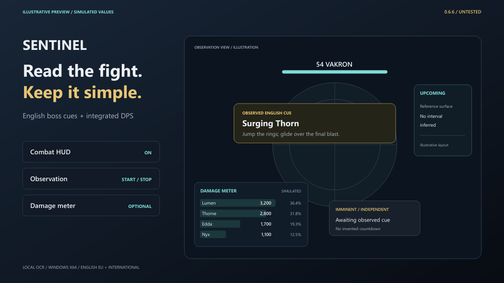
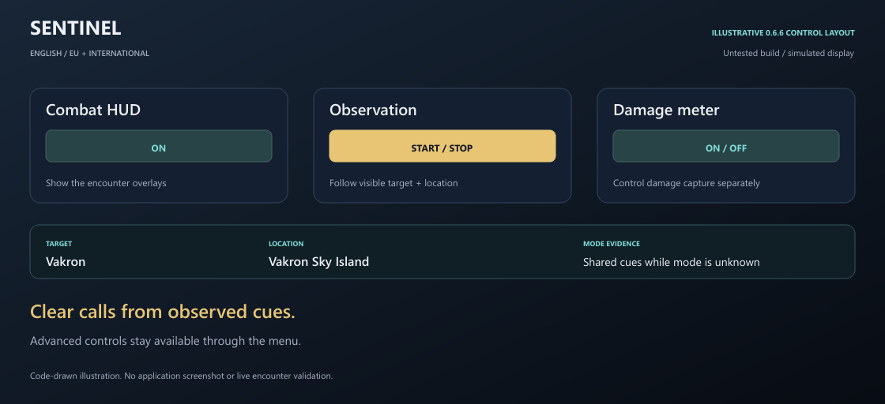
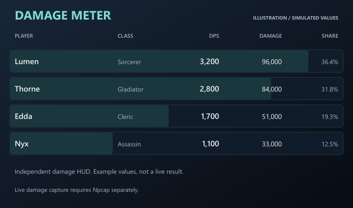

01 / DISPLAY
Combat HUD
Show or hide the encounter overlays. Give action warnings, Upcoming and Imminent their own space on the screen.
Start observation. Sentinel follows visible English target names and location labels, selects compatible encounters, and brings observed boss cues into view. Keep the integrated damage meter one toggle away.
0.6.6 is implemented and packaged, but this build has not undergone functional or live-game tests. Treat it as a preview.

Illustrative preview drawn in SVG. Simulated readings and layout; no current application screenshot or live encounter is shown.
Choose whether the combat HUD is visible, start or stop screen observation, and switch the damage meter on or off. Profile, context and standard HUD-region discovery run automatically in beginner mode.
Show or hide the encounter overlays. Give action warnings, Upcoming and Imminent their own space on the screen.
Read the foreground English game HUD. Match the visible target and location; keep ordinary enemies quiet.
Enable damage capture independently. Live capture requires Npcap installed separately; the meter remains optional.

The integrated damage meter has its own control and movable HUD. Keep the encounter call clear while damage sits where you want it.
Names and classes depend on received metadata. Unknown actors retain numeric labels while names are pending. Captured actors can include non-party players; no party-only filter is claimed.

Put the action near your focus, Upcoming well to the right, and damage in its own corner. Explore the movable HTML presentation and toggle the simulated meter.
The local library contains 1,002 target/profile identities. Of those, 223 have some source-backed warning support and 779 currently provide identity recognition only. These counts do not establish live-validated mechanics for every boss.
54 world entries map to 51 profiles. Exact names, maps and NPC variants help establish identity; ordinary and summon variants remain exclusions.
137 world / higher-GS targets: 72 have some warning support and 65 remain identity-only. Gear-score values describe source entrance requirements.
Published advice is joined to exact English skill names only after local NPC ownership is established. Automatic mode does not invent cast durations, wave intervals or enrage times.
If difficulty remains unknown, only identical safe skill cues shared by compatible variants can be used. Variant-specific HP phases stay out of that common-cues view.
Extract the complete archive, start Sentinel, switch on the overlays you want and begin observation with the English game in the foreground. Live DPS requires the separate capture driver.
95,189,963 bytes · 90.78 MiB · 428 files · English Windows x64 package
Archive: AION-Sentinel-0.6.6-untested-windows-x64.7z
SHA-256: 948ade7b35e2d8b40f430150680ee337068262f1be63ab61eb6c0d99ebe11ba2Version 0.6.6 is an untested Windows preview. Keep the complete extracted folder together.